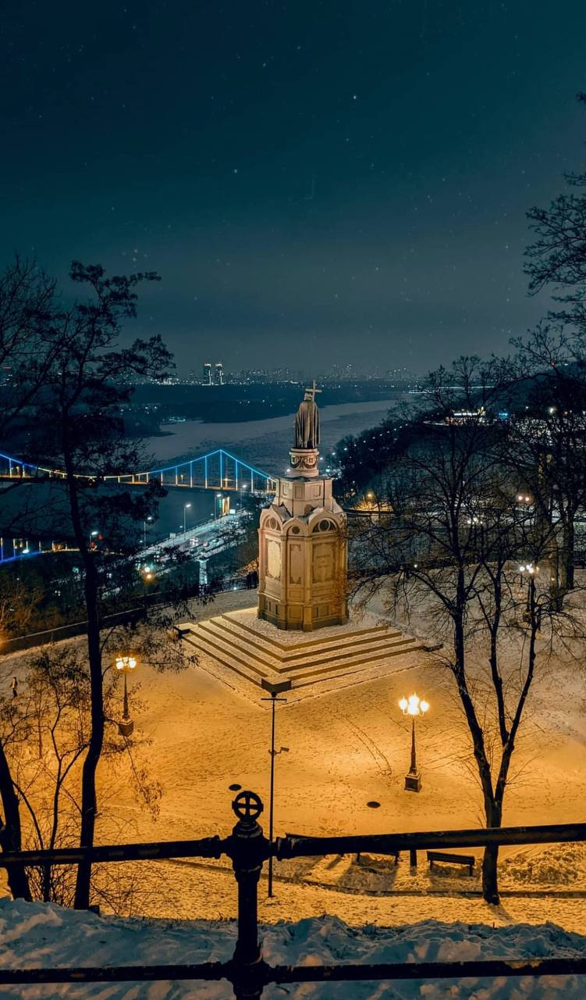

Привіт, мене звати Лілія і ось невеличка інформація про мене:
- Мені 18 років;
- Началась в ВОЛзПВФП ім. Героїв Небесної Сотні ;
- Люблю спорт.
Моє хоббі - це фотографія
Я завжди намагаюся зафіксувати найкращі моменти життя на камеру.
Переваги
Я віддаю перевагу природі та пейзажам, часто вирушаю в подорожі, щоб знайти нові красиві місця для фотографування. Редагування фотографій також цікаво для мене, і я намагаюся створювати вражаючі оброблені зображення.
Маленький висновок
Мої фотографії часто стають способом виразу для мене, і я ділюся ними в соціальних мережах та з друзями. Фотографія допомогає мені бачити світ з іншої перспективи та насолоджуватися його красою в повному обсязі